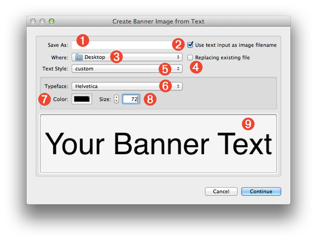
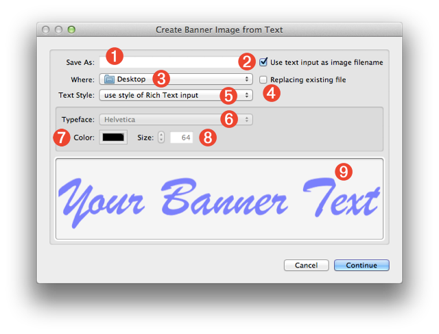
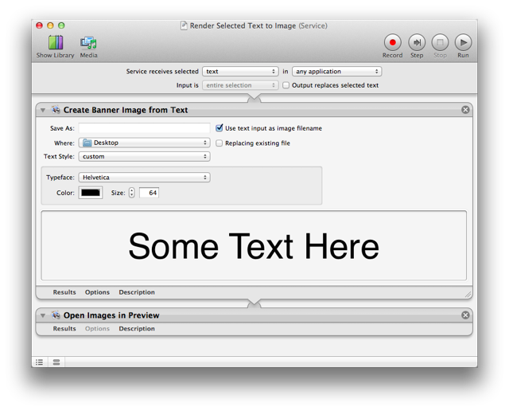
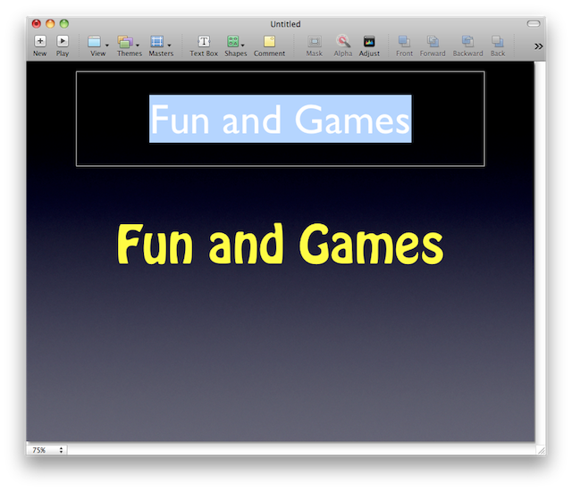

Create Banner Image from Text
Those familiar with the creation of web-content know that because of font availability and other issues, it may be necessary to display text on a webpage as an image instead of using CSS. The Create Banner Image from Text action is designed to simplify the process of creating an image from text. This action will render text passed to the action as an image, styled using either chosen type parameters or, in the case of passed RTF input text, use the existing formatting of the passed text.
The Action Interface
The following desccribes the various controls and parameters used in the action interface.
- Image Filename - By default, this text input field (1) is disabled, in favor of automatic naming using the selected text as the image name. To enter a custom name, deselect the checkbox located to the right of the field (2)TIP: this input field will accept text tokens, Automator workflow variables, or a combination of the two, as the name for the rendered PNG image file. Therefore, unique names can be dynamically generated for each use of the action.
- Automatic File Naming - Select this checkbox (2) if you want the name of the rendered PNG image file to be based on the selected text. For example, the selected slide title “My Slide Title” would be used to name the generated image file: “My Slide Title.png”
- Destination Folder - Pick the folder that is to contain the rendered image from this popup menu (3).TIP: this popup menu will also accept Automator workflow variables, so receiving folders can be determined dynamically.
- Replace Existing File - Select this checkbox (4) if you want to replace any existing image files with the newly rendered file.

- Text Style - This control (5) determines the method used to set the style attributes of the rendered text. If the popup menu is set to custom (above), the typeface (6) and size (8) controls will be enabled, allowing you to choose the font, color, and size for the rendered text. However, if the control is set to use style of Rich Text input (below), the Rich Text formatting (RTF) settings of the input text will be used.

- Typeface - Select the typeface to be used in rendering the image, from this popup menu (6) displaying the list of fonts currently installed on your computer.TIP: to navigate the menu quickly, click once on the popup to display the menu, then type the first letter of the font you want, then use the up and down arrow keys to highlite the desired typeface. Hit the Return key to make the selection.
- Text Color - Click this color well (7) to summon the system color palette, and select the color to use for the text in the rendered image.
- Type Size - Enter the font size in this input field (8) to be used in rendering the selected text to image.
- Preview - The preview view (9) displays the current parameters of color and typeface. The type size is not shown to scale. When the action is used in a service that is set to display when the service is run, the preview view can be resized horizontally by dragging this control to the right. The text will display in actual pixels (up to 128 pts)
Service Collection
A common use of the action is in the creation of a service that renders the text selected in any application, into an alph-channel image. This simple service workflow is shown below:

You can download and install this example and these other service workflow files:
- Render Selected Plain Text as Image - this workflow service uses the currently selected plain text (in any application) as the source for the banner image. You set the text properties, such as font, size, color, yourself. (Available Text Style: Custom)
- Render Selected Rich Text as Image - this workflow service uses the currently selected rich text (in any application) as the source for the banner image. By default, the text styles of the passed text are used, but can be overridden using the custom text style option. (Available Text Style: RTF or Custom)
- Create Banner Image with Clipboard Text - uses the text copied to the clipboard as the source for the banner image. By default, the text styles of the passed text are used, but can be overridden using the custom text style option. (Available Text Style: RTF or Custom)
- Render Prompted Text to Image - prompts the user to enter the text for the banner image. You set the text properties, such as font, size, color, yourself. (Available Text Style: Custom)
- Render Selected Text as Image and Add to Slide - (shown below) this workflow service provides an easy way to convert slide titles in Keynote to image files, enabling you to use non-standard fonts in presentation placed on mobile devices that have a limited number of installed fonts. By default, the text styles of the passed text are used, but can be overridden using the custom text style option. (Available Text Style: RTF or Custom)

 TRY IT YOURSELF! Download a zip archive of the service workflows list above. To install, double-click each workflow file and click the Install button in each of the forthcoming dialogs. Once installed, the services will be available from the Application > Services menu.
TRY IT YOURSELF! Download a zip archive of the service workflows list above. To install, double-click each workflow file and click the Install button in each of the forthcoming dialogs. Once installed, the services will be available from the Application > Services menu.